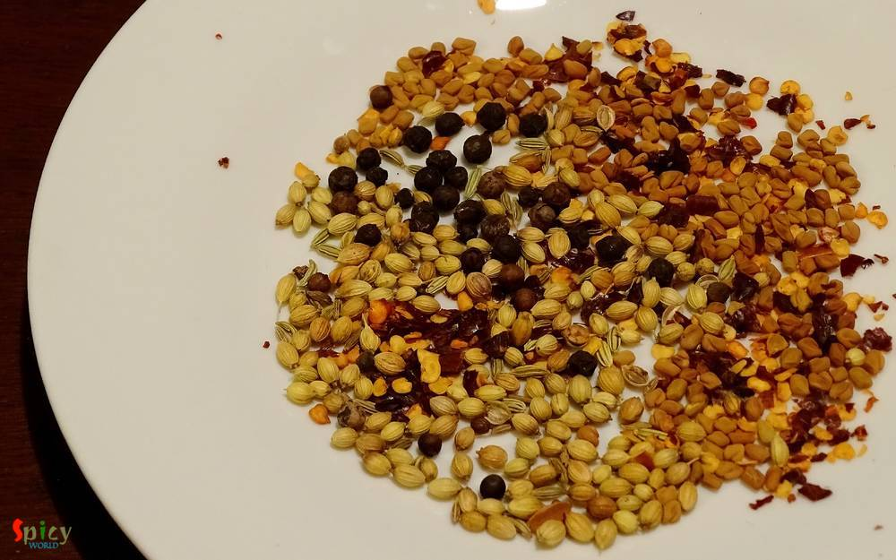
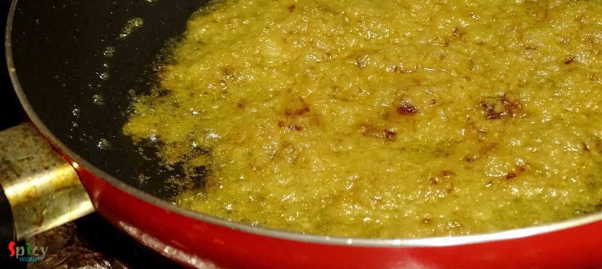
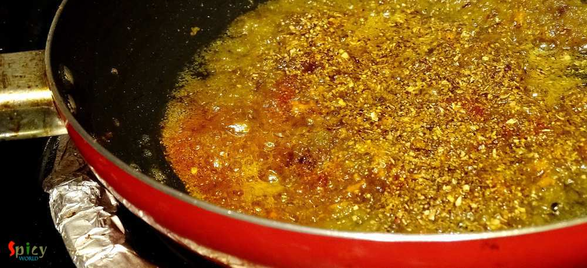
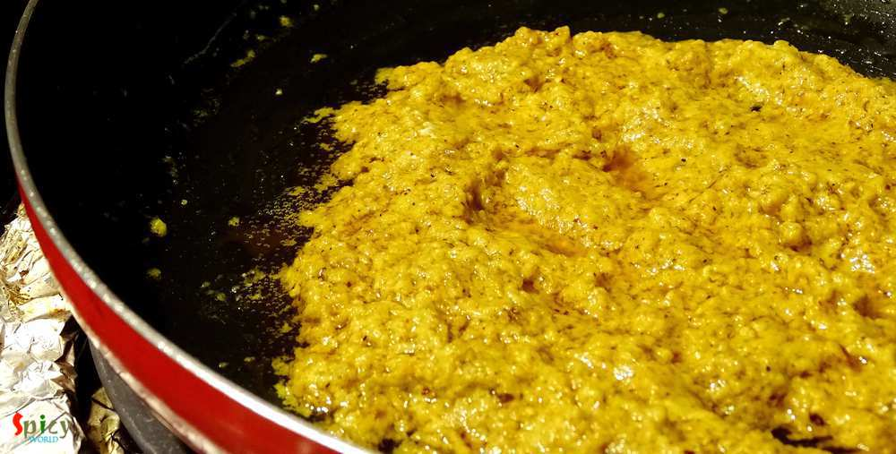
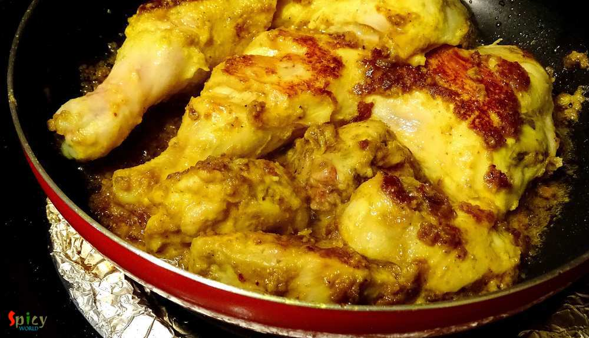
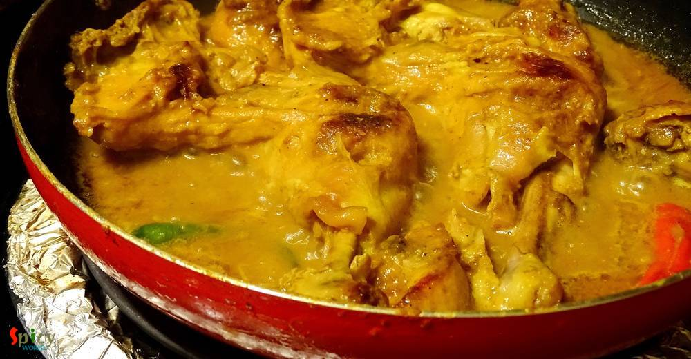
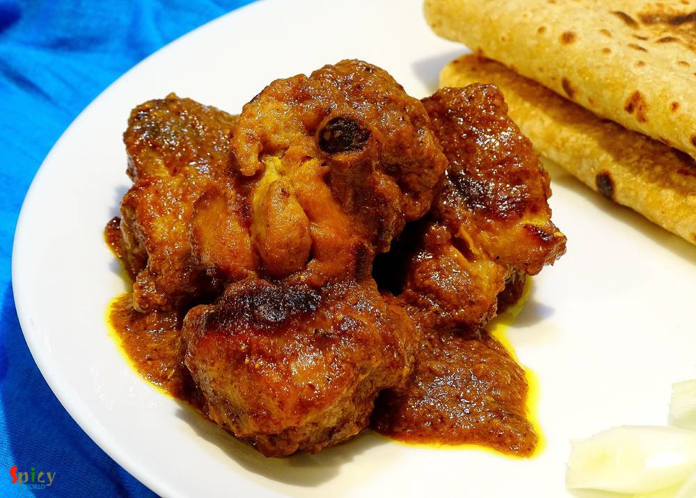

Simple and Easy Recipes
Chicken Bhuna Masala
© 2016 Spicy World, Published on: Apr 11, 2016
Chicken curry is almost regular in my kitchen and that's why I always try to do some twists with the masala, otherwise who will eat same chicken curry regularly? Nobody ! This time I made the twist with dry spices. Generally whole garam masala is used in this type of curry but I decided to go for a change and surprisingly I got the perfect taste. 'Bhuna' means koshano / in low flame you have to cook something with spices for long time. The curry is very aromatic itself and goes very well with some steamed rice or naan. I will make this dish soon again, until then what are you waiting for?

Ingredients
- 1 kg medium / big cut chicken with bone.
- 1 cup of chopped onion.
- 2 cloves of garlic.
- 1 inch ginger.
- 3 Tablespoons of curd.
- Whole spices (2 Teaspoons of coriander seeds, Half Teaspoon of fenugreek / methi seeds, 1 dry red chilli, 8 - 10 black peppercorns).
- 1 Teaspoon of turmeric powder.
- 1 Teaspoon of red chilli powder.
- Salt and sugar.
- 3 - 4 Tablespoons of mustard oil.
- Warm water.
- Some chopped coriander leaves.


Steps
Dry roast all the whole spices in a pan for 3 - 4 minutes in low flame, then grind them to a powder. Keep it aside.
Make a smooth paste of onion, ginger and garlic.
Heat mustard oil in a pan.
Add the smooth paste and cook for 10 - 15 minutes until the raw flavour of everything is gone.
Then add that dry roasted powder, turmeric powder, red chilli powder, salt and half Teaspoon of sugar. Mix well for 5 minutes.
Then lower the flame for 1 minute and add the curd. Mix well for 4 minutes.
Add the chicken pieces, some salt and cook with the masala for 20 - 30 minutes in slow flame. Do not burn it, if it becomes too dry, you can sprinkle some water.
After that add a cup of warm water, cook until the chicken becomes soft and gravy becomes thick.
Lastly sprinkle some chopped coriander leaves and serve.
Your chicken bhuna masala is ready.
Serve this hot with steamed rice or naan.
")